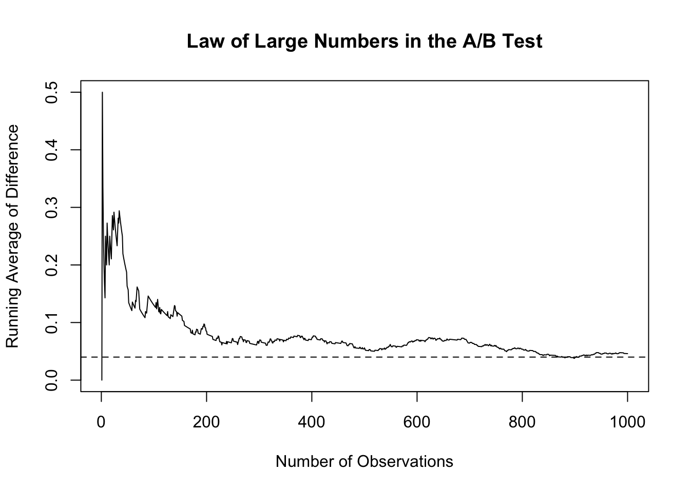

Simulating Key Ideas from Classical Frequentist Statistics
Author
Peirong
Published
April 15, 2026
Introduction
Many websites use call-to-action buttons to encourage visitors to sign up for newsletters or other services. In this post, I explore an A/B test comparing two different call-to-action phrases on a website landing page. The goal is to determine which version leads to a higher sign-up rate and to use simulation to understand key ideas from classical frequentist statistics. This analysis helps show how statistical tools can support decision-making in a practical business setting.
The A/B Test as a Statistical Problem
An A/B test can be viewed as a statistical comparison between two groups of website visitors. Each visitor either signs up for the newsletter or does not, so the outcome for each person can be modeled as a Bernoulli random variable with a probability of success equal to the sign-up rate. Because the wording of the call to action may affect user behavior, we allow the sign-up probability to differ across the two groups. Let \(\pi_A\) represent the probability that a visitor signs up after seeing CTA A, and let \(\pi_B\) represent the probability for visitors who see CTA B.
The main quantity of interest is the difference in sign-up rates between the two versions, which can be written as \(\theta = \pi_A - \pi_B\). If \(\theta\) is positive, CTA A performs better. If \(\theta\) is negative, CTA B performs better. To estimate this difference from the data, we use the difference in sample proportions: \(\hat{\theta} = \bar{X}_A - \bar{X}_B\). Since each outcome is coded as either 1 or 0, the sample mean in each group is simply the observed proportion of visitors who signed up.
This framework allows us to formally test whether the observed difference between the two CTAs is likely due to random chance or whether it reflects a real difference in performance.
Simulating Data
In a real A/B test, we would not know the true values of \(\pi_A\) and \(\pi_B\). We would only observe the outcomes in our sample and try to estimate the underlying sign-up rates. However, in this exercise, we set the true probabilities ourselves so that we can study how well our estimator performs when we know the truth. This makes it easier to understand the logic of statistical inference.
For this simulation, suppose that \(\pi_A = 0.22\) and \(\pi_B = 0.18\), so the true difference is \(\theta = 0.04\). We then simulate 1,000 visitors in each group, where each outcome is either 1 for a sign-up or 0 for no sign-up.
The Law of Large Numbers tells us that as the sample size increases, the sample mean gets closer to the true population mean. In the context of this A/B test, this means that as we observe more visitors, our estimator \(\hat{\theta} = \bar{X}_A - \bar{X}_B\) should get closer to the true difference \(\theta = 0.04\). This idea gives us confidence that larger samples lead to more stable and reliable estimates.
diff_vector <- x_A - x_Brunning_mean <-cumsum(diff_vector) / (1:length(diff_vector))plot( running_mean,type ="l",xlab ="Number of Observations",ylab ="Running Average of Difference",main ="Law of Large Numbers in the A/B Test")abline(h =0.04, lty =2)

The plot shows that when the sample size is very small, the running average is quite unstable and moves around a lot. However, as more observations are included, the estimate becomes smoother and gradually approaches the true difference of 0.04. This demonstrates the Law of Large Numbers in practice: with enough data, the estimator becomes more trustworthy.
Bootstrap Standard Errors
After estimating the difference in sign-up rates, the next question is how precise that estimate is. A point estimate alone does not tell us how much sampling variability we should expect. Bootstrapping is a useful resampling method that helps us estimate the variability of a statistic without relying entirely on theory. The basic idea is to repeatedly sample with replacement from the observed data, compute the statistic each time, and then use the variation across those resampled statistics to estimate the standard error.
The bootstrapped standard error measures how much the estimated difference in sign-up rates varies across repeated resamples of the observed data. I also computed the analytical standard error using the standard formula for the difference in two independent sample proportions. In this case, the two values should be fairly close, which suggests that the bootstrap is giving a reasonable estimate of uncertainty.
Using the bootstrapped standard error, I constructed a 95% confidence interval for \(\theta\). This interval gives a range of plausible values for the true difference in sign-up rates between CTA A and CTA B. If the interval does not include 0, that suggests there is evidence that the two CTAs perform differently.
The Central Limit Theorem
The Central Limit Theorem says that as the sample size becomes larger, the sampling distribution of an estimator becomes approximately Normal, even if the underlying data are not Normally distributed. In this A/B testing setting, that means the distribution of \(\hat{\theta} = \bar{X}_A - \bar{X}_B\) should look more bell-shaped as the sample size increases. This helps explain why Normal-based inference often works well when we have enough data.
The four histograms show how the sampling distribution of \(\hat{\theta}\) changes as the sample size increases. When the sample size is small, the distribution looks more irregular and rough. As the sample size becomes larger, the histogram becomes smoother, more symmetric, and more bell-shaped. This visual pattern is exactly what the Central Limit Theorem predicts, and it shows why larger samples make statistical inference more reliable.
Hypothesis Testing
Now that we have seen the Central Limit Theorem in action, we can use it to perform a formal hypothesis test. A hypothesis test helps us decide whether the observed difference between the two CTAs is large enough to provide evidence against the idea that they perform the same. In this case, the null hypothesis is \(H_0: \theta = 0\), which means there is no true difference in sign-up rates between CTA A and CTA B. The alternative hypothesis is \(H_1: \theta \neq 0\), which means the two CTAs do differ.
To carry out the test, we standardize our estimate by dividing it by its standard error. This gives the test statistic
\[
z = \frac{\hat{\theta} - 0}{SE(\hat{\theta})}
\]
Under the null hypothesis, and with a large enough sample, the Central Limit Theorem tells us that \(\hat{\theta}\) is approximately Normally distributed with mean 0 after standardization. This is why the test statistic can be compared to the standard Normal distribution in order to compute a p-value. Although people sometimes refer to this kind of procedure as a t-test, in this setting it is more accurate to think of it as a large-sample z-test. That is because our data are Bernoulli outcomes rather than Normally distributed observations, and the Normal approximation comes from the CLT.
The test statistic measures how many standard errors the estimated difference is away from 0, which is the value assumed under the null hypothesis. The p-value tells us how surprising our observed result would be if there were truly no difference between the two CTAs. If the p-value is small, we have evidence against the null hypothesis. In this simulation, the result suggests whether the difference between CTA A and CTA B is statistically significant at conventional levels.
The T-Test as a Regression
The two-sample comparison we carried out above can also be written as a simple linear regression. This is useful because it shows that hypothesis testing and regression are closely connected. In more complicated settings, the regression framework becomes especially helpful because it allows us to add controls, interactions, and additional treatment groups while keeping the same basic logic.
To set this up, we combine the A and B observations into one dataset. Let \(Y_i\) be the outcome variable, where \(Y_i = 1\) if the visitor signed up and \(Y_i = 0\) otherwise. Let \(D_i\) be an indicator variable equal to 1 if the visitor saw CTA A and 0 if the visitor saw CTA B. We then fit the regression
\[
Y_i = \beta_0 + \beta_1 D_i + \varepsilon_i
\]
In this model, \(\beta_0\) represents the mean sign-up rate for group B, and \(\beta_0 + \beta_1\) represents the mean sign-up rate for group A. Therefore, \(\beta_1\) is the difference in group means, so the coefficient estimate \(\hat{\beta}_1\) should match the estimate \(\hat{\theta} = \bar{X}_A - \bar{X}_B\) from the earlier two-sample analysis.
Call:
lm(formula = Y ~ D, data = reg_data)
Residuals:
Min 1Q Median 3Q Max
-0.218 -0.218 -0.172 -0.172 0.828
Coefficients:
Estimate Std. Error t value Pr(>|t|)
(Intercept) 0.17200 0.01251 13.745 < 2e-16 ***
D 0.04600 0.01770 2.599 0.00941 **
---
Signif. codes: 0 '***' 0.001 '**' 0.01 '*' 0.05 '.' 0.1 ' ' 1
Residual standard error: 0.3957 on 1998 degrees of freedom
Multiple R-squared: 0.00337, Adjusted R-squared: 0.002871
F-statistic: 6.756 on 1 and 1998 DF, p-value: 0.009412
The regression results should show that the coefficient on \(D\) is numerically the same as the estimated difference in sign-up rates from the previous section. Its standard error, test statistic, and p-value should also be very similar. This equivalence matters because regression gives us a much more flexible framework for analyzing experiments, even though in this simple two-group case it reproduces the same basic result.
The Problem with Peeking
Peeking at the results of an experiment before all of the data have been collected creates a serious problem in classical frequentist inference. A single hypothesis test conducted at the 0.05 significance level has a 5% chance of producing a false positive when the null hypothesis is true. However, if we repeatedly test the data as they accumulate, each additional look creates another opportunity to incorrectly reject the null. As a result, the overall false positive rate becomes larger than 5%.
To show this, I simulate a setting in which the null hypothesis is true. I assume that both CTA A and CTA B have the same true sign-up probability, so \(\pi_A = \pi_B = 0.20\) and therefore \(\theta = 0\). In each simulated experiment, I generate 1,000 observations for each group and compute a hypothesis test after every 100 observations per group. I then record whether at least one of those interim tests is significant at the 0.05 level. Repeating this process many times allows me to estimate the true false positive rate under peeking.
The result from this simulation estimates the probability of getting at least one statistically significant result even though there is actually no difference between the two CTAs. This empirical false positive rate should be noticeably larger than 0.05, showing that repeated peeking inflates Type I error. In practice, this means that stopping an A/B test early just because one interim result looks significant can lead to declaring a winner when no real difference exists.